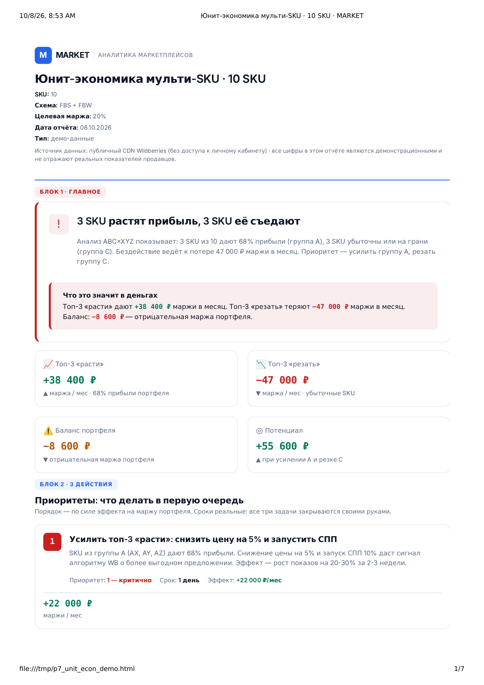
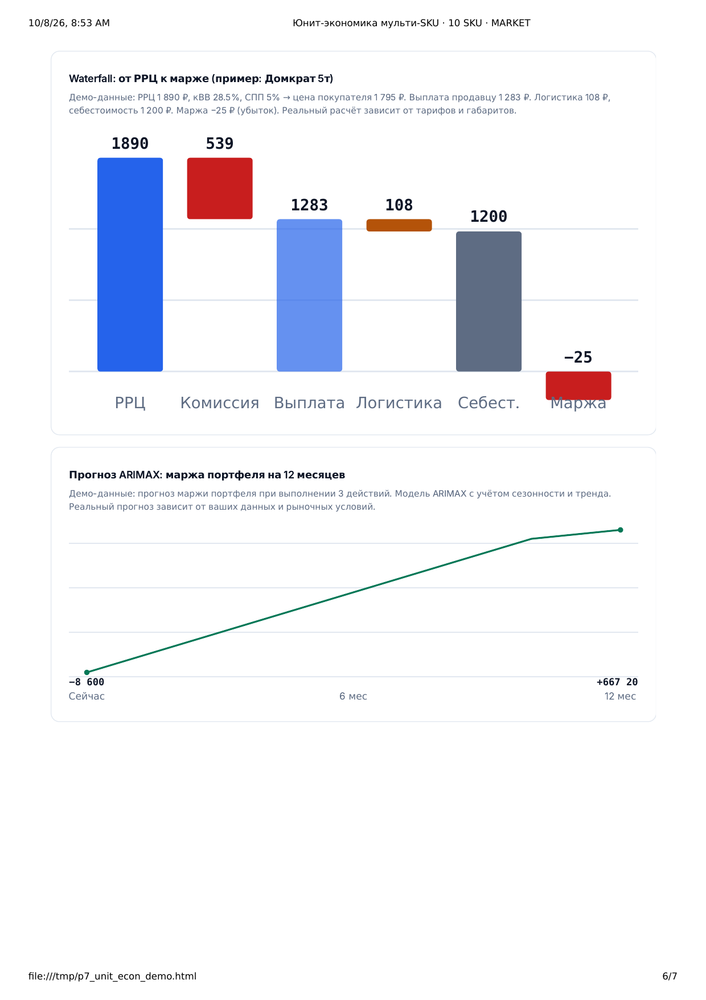

Расчёт цены и безубыточности
Сколько вы реально зарабатываете на SKU?
Считаю полную статью затрат Wildberries и даю безубыточную цену — то число, ниже которого товар продаётся в минус. По FBS и FBW отдельно, с ценой под вашу целевую маржу. Отчёт за один рабочий день.
Оплата после того, как отчёт готов. Предоплата не нужна.
Что получите
пять блоков отчёта, каждый отвечает на свой вопрос-
ГЛАВНОЕ — маржа с единицы и точка безубыточности
Сколько остаётся с одной продажи после всех затрат и какая цена делает товар нулевым. Два числа по FBS и два по FBW: у схем разная операционка и разный порог. Рядом — запас до безубыточности в рублях и процентах: сколько ещё можно уступить в скидке.
Пример: «Сейчас −23,49 ₽ с единицы по FBS и +36,82 ₽ по FBW. Безубыточная цена FBS — 631 ₽, FBW — 564 ₽»
-
3 ДЕЙСТВИЯ — что менять в цене и скидке
Три правки по приоритету: что именно поменять, ожидаемый эффект в рублях с единицы и в месяц, срок. Не «поднять цену», а «скидка 66 % → 50 % выводит FBS в плюс, продажи не падают».
Пример: «1. Скидка до 50 % — FBS +45,77 ₽ с единицы, +14 600 ₽ в месяц, срок 1 день»
-
ПОЧЕМУ МЫ — откуда цифры
Источник данных и проверки качества, чтобы вы могли оценить, насколько цифрам можно верить. Не «мы посчитали», а схема: откуда взяты данные, какая формула применена и по какому документу площадки взяты ставки.
Пример: «Публичный CDN Wildberries + выгрузка площадки, 298 из 298 строк сверено, ставки — по оферте WB на дату расчёта»
-
СТРАХ ПОТЕРИ — что будет, если не чинить
Сколько денег уходит прямо сейчас и как накапливается потеря на горизонтах 3, 6 и 12 месяцев. Если товар продаётся в минус, каждая продажа — это не «оборот», а прямой убыток, и он растёт вместе с объёмом.
Пример: «−23,49 ₽ × 320 шт/мес = 7 517 ₽ убытка в месяц, 90 202 ₽ за год — на товаре, который кажется прибыльным»
-
ДЕТАЛИ — полная статья затрат по FBS и FBW
Всё, что подтверждает выводы: разбор по статьям — комиссия категории, логистика по габаритам, хранение, эквайринг, налог, возвраты — отдельно для FBS и FBW. Плюс цена под целевую маржу (10 / 15 / 20 %) и сценарии скидки 10 / 20 / 30 %.
Пример: «Комиссия 19,5 % · логистика 78,20 ₽ · хранение 3,10 ₽/сут · эквайринг 1,5 % · налог УСН 6 %»
Как работает
три шага, без встреч и созвонов-
Заявка
Присылаете ссылку на карточку и себестоимость единицы. Если есть выгрузка площадки за месяц — приложите её, расчёт станет точнее. Ключ API не нужен.
-
Расчёт
Собираю статью затрат по FBS и FBW, считаю маржу с единицы, точку безубыточности, цену под целевую маржу и сценарии скидки. Разбираю, где именно уходит маржа.
-
Отчёт
Получаете отчёт из 5 блоков в PDF и в интерактивном HTML: смотрите, задаёте вопросы, платите после. Если расчёт не получился по моей причине — оплата не берётся.
Пример отчёта
как выглядит результатНиже — интерактивный расчёт по карточке категории «Домкраты» (nmId 334820823). Цифры в примере — расчёт по демонстрационным данным, а не по вашей карточке. Подвиньте ползунки цены и скидки, чтобы увидеть, как меняется маржа и где проходит безубыточность.


Частые вопросы
семь вопросов, которые задают до заказаЧто нужно от меня для расчёта?
Ссылка на карточку товара, себестоимость единицы (закупка, доставка до склада, упаковка) и выгрузка отчёта площадки за любой месяц. Если выгрузки нет — подскажу, где её взять, и посчитаю на текущих данных карточки.
Нужен ли API-ключ Wildberries?
Нет. Публичные данные карточки беру из открытого CDN Wildberries. Если у вас есть ключ Seller API и вы готовы его передать — расчёт станет точнее по логистике и хранению, но это не обязательно.
Сколько времени занимает расчёт?
Один рабочий день с момента получения данных: себестоимости и выгрузки. Если данных нет — помогу собрать, это входит в работу.
Чем это отличается от маржи в личном кабинете WB?
Кабинет показывает выручку и удержания площадки, но не вашу себестоимость и не точку безубыточности. Расчёт даёт число на единицу после всех затрат — комиссии, логистики, хранения, эквайринга, налога, — и цену, ниже которой товар продаётся в минус.
Что если отчёт не подойдёт?
Оплата после того, как отчёт готов: сначала вы его смотрите, потом платите. Предоплата не нужна. Если расчёт не получился по моей причине — данных не хватило или карточка не разобралась, — оплата не берётся.
Работаете с начинающими?
Да. Расчёт полезен и для товара без продаж: он покажет, при какой цене товар вообще имеет смысл продавать и какой запас остаётся на скидку. Для новичков это дешевле, чем узнать это на своих потерях.
Что НЕ входит в расчёт?
Внесение изменений в карточку и настройка цен в кабинете — только рекомендации. Разбор конкурентов (это P4), экономика всего магазина (P7) и анализ ниши (P10) — отдельные услуги. Работаю по одному SKU на заказ.
Пришлите ссылку на карточку
Отвечаю письменно, звонков нет. Достаточно ссылки на карточку Wildberries и себестоимости единицы — остальное найду сам. Расчёт будет завтра.